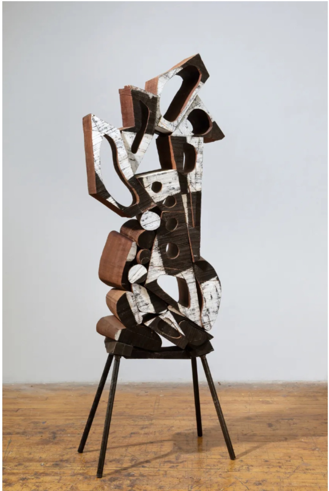
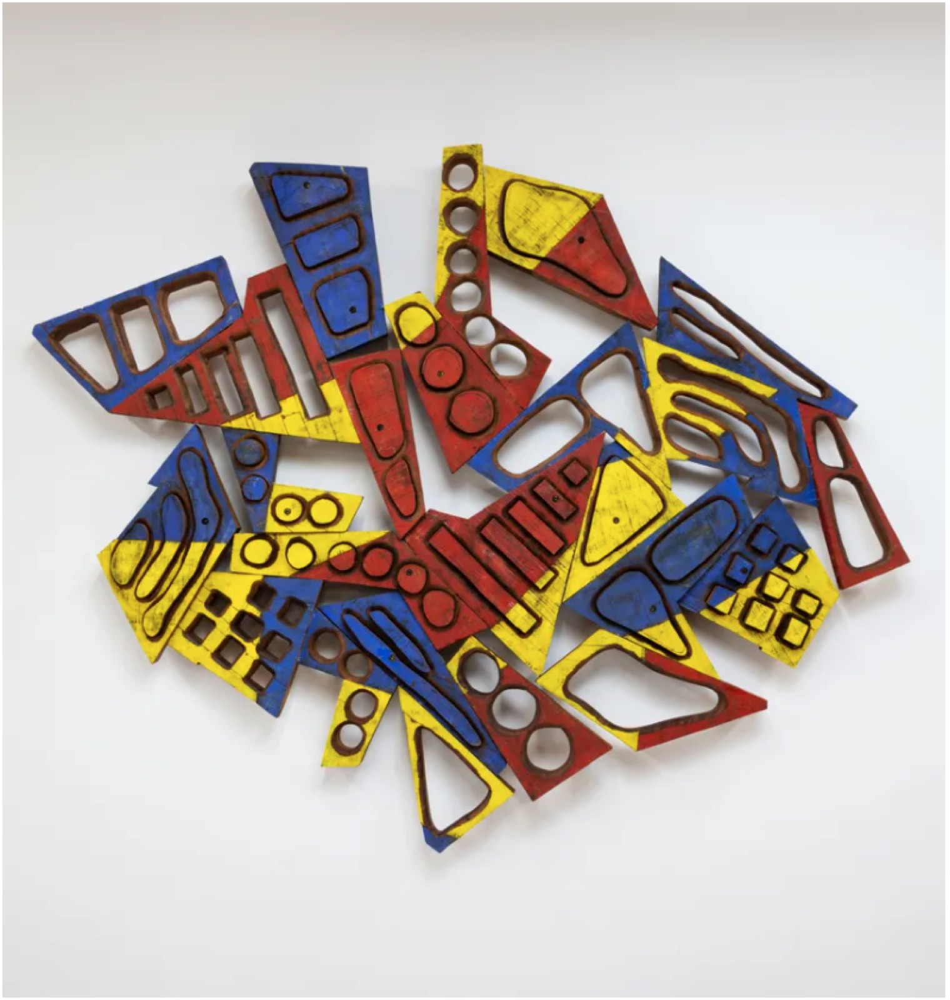
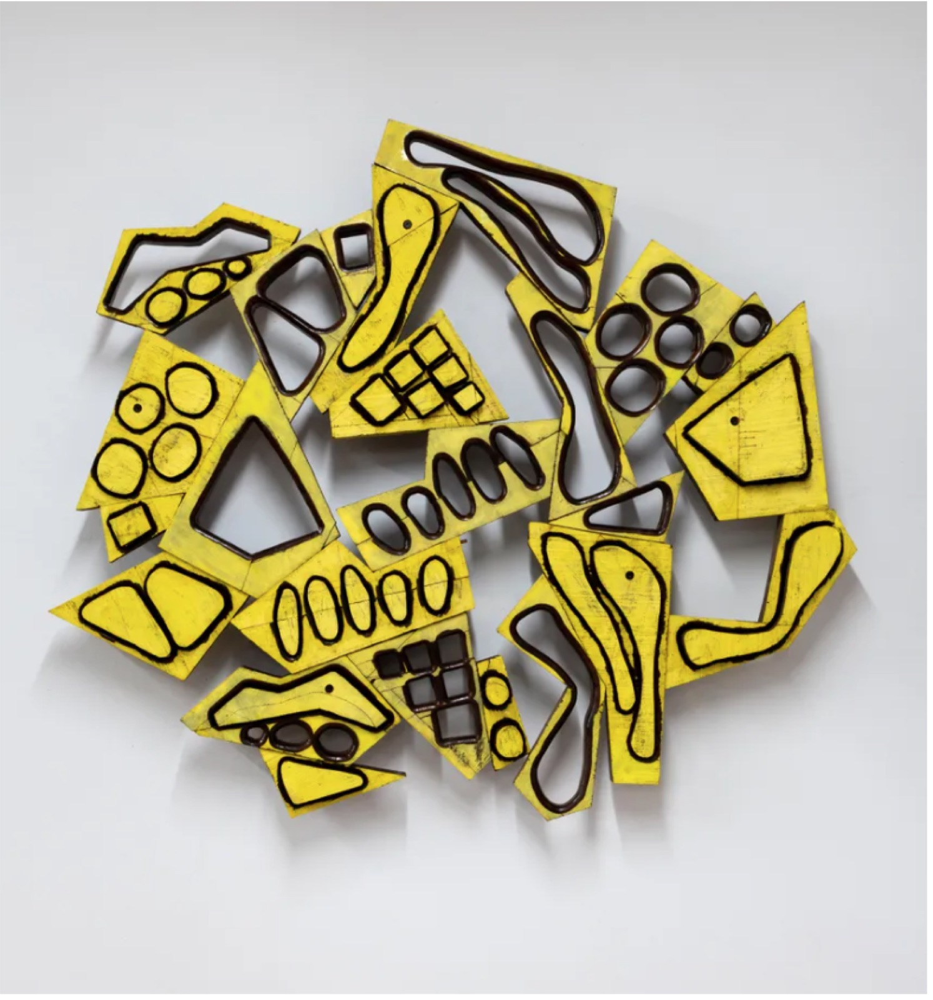
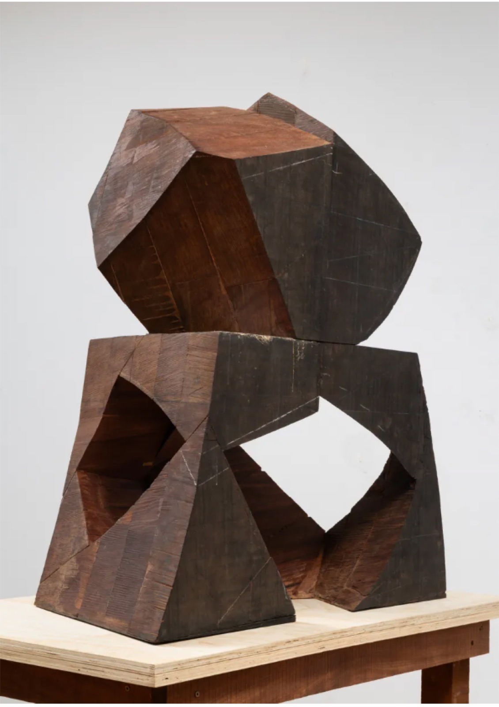
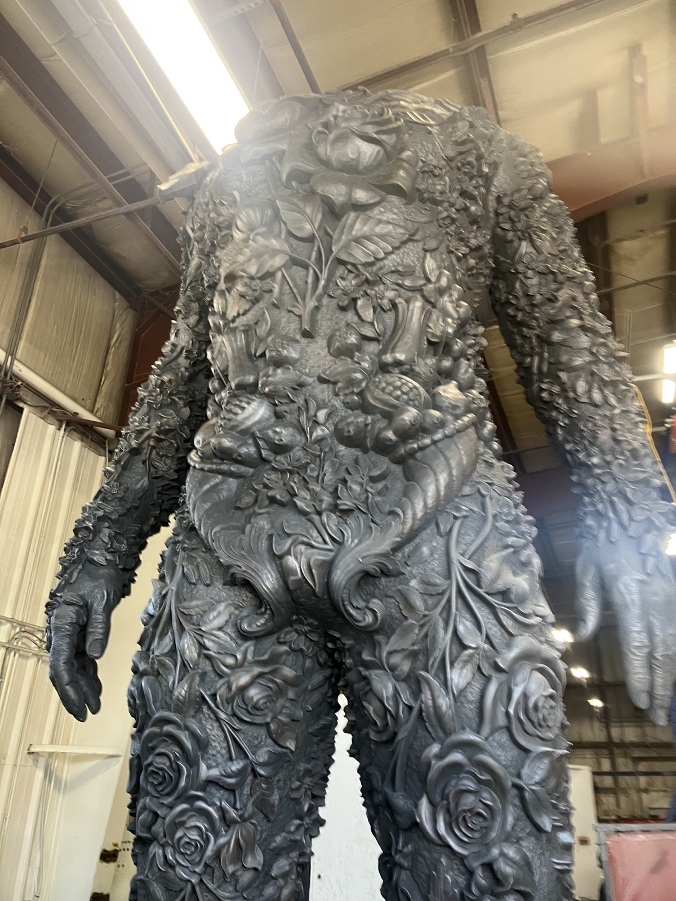
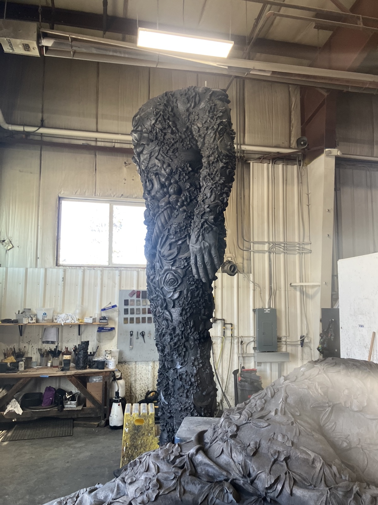
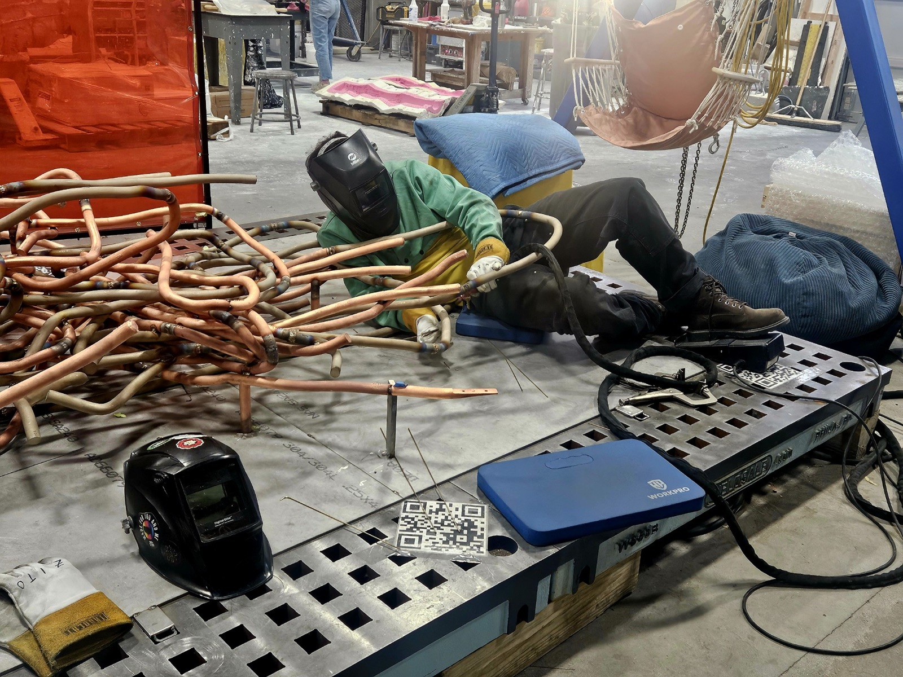
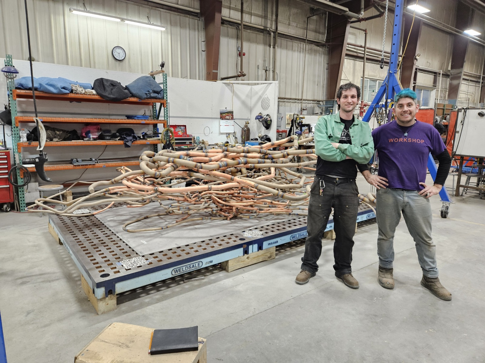
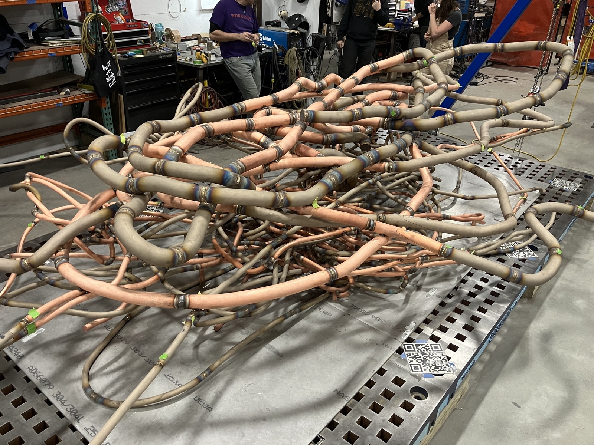

As a creator I’m glad to have a background in fabrication. For much of my professional life I have worked to make the ideas of others corporeal. I now understand that the bridge between thought and reality is the space in which an idea gains an agency of its own. In other words the concessions made in the pursuit of original intention leads to some of the most beautiful and genuine aspects of a piece.
As I move towards creating my own work I hope to embrace constraints as a creative scaffold letting ideas breath in their most effective context.




I had the pleasure of helping Mel prepare for his show Tilt at David Nolan Gallery. Before working with Mel, I had spent time building decks in Upstate NY. Working on the show was a process of unlearning the standards of structural carpentry: from pressure treated wood and laser levels to mahogany and chainsaws. This isn’t to say the precision of traditional carpentry was lost, but rather that we were chasing form instead of function: poetry vs. prose.
Working with Mel bolstered my confidence as a maker. Coming from Workshop, I was used to a way of working that was more standard, incremental, and supervised. Working with Mel still required precision, but I was more responsible for the decision making necessary to bring an idea into physical form. Those decisions were small, sometimes improvisational, sometimes creative, and they pushed me to trust myself.


I really treasured my time working on Amalgam by Nick Cave. Firstly, it’s just so cool. It also tested me and the team at Workshop. We cast, assembled, and finished the twenty six foot sculpture from scratch, using the whole kitchen sink, from gantries to AR goggles. Due to the scale, almost every task necessitated close collaboration; the effort we put in mirrored the herculean aspirations of the work.



SC-038 was one of my first big projects at Workshop. I cut my teeth welding upside down, sideways, and in body orientations that escape language. This project also introduced me to the use of AR in fabrication. Each segment of the sculpture could be oriented and attached according to the projection visible in real space through the goggles. Without this tool, the project would have required an unimaginable amount of measurement in three dimensions. I am also thankful to have worked with Joe Zito on this project; he became a mentor of mine and a good friend.